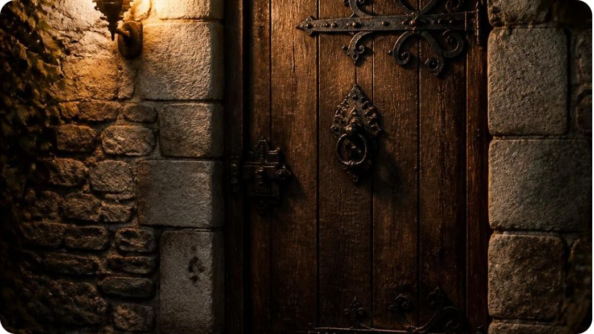
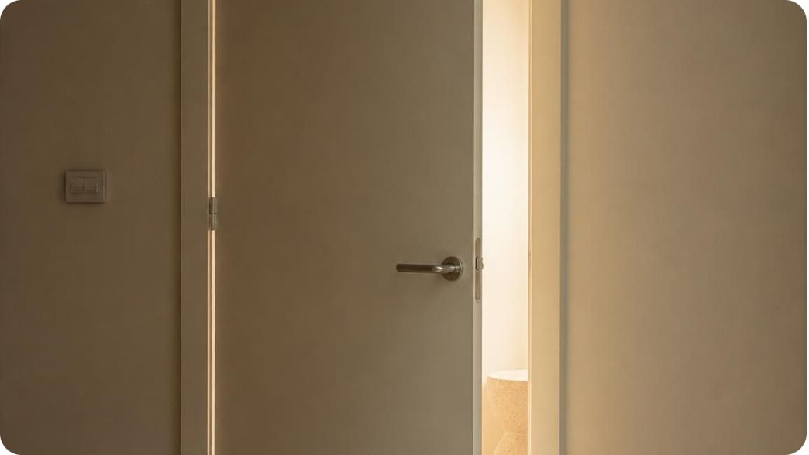
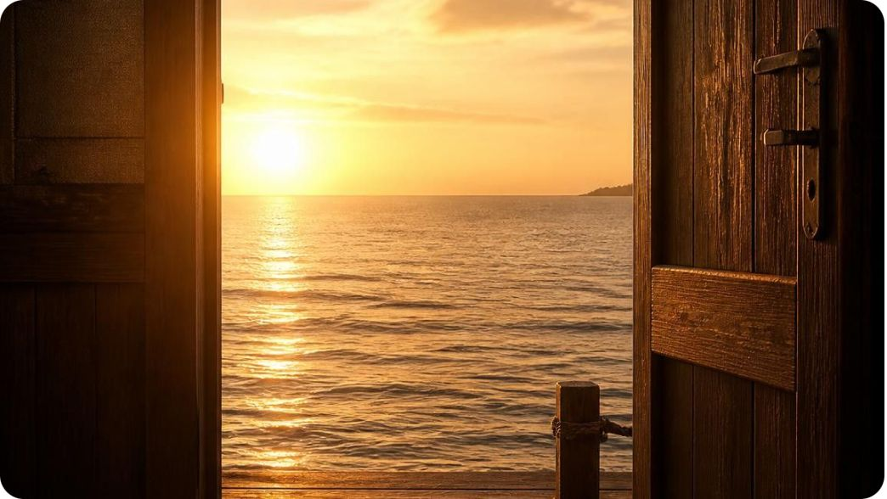
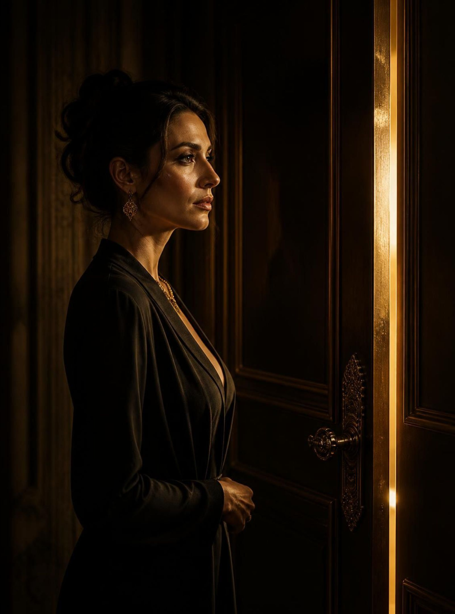
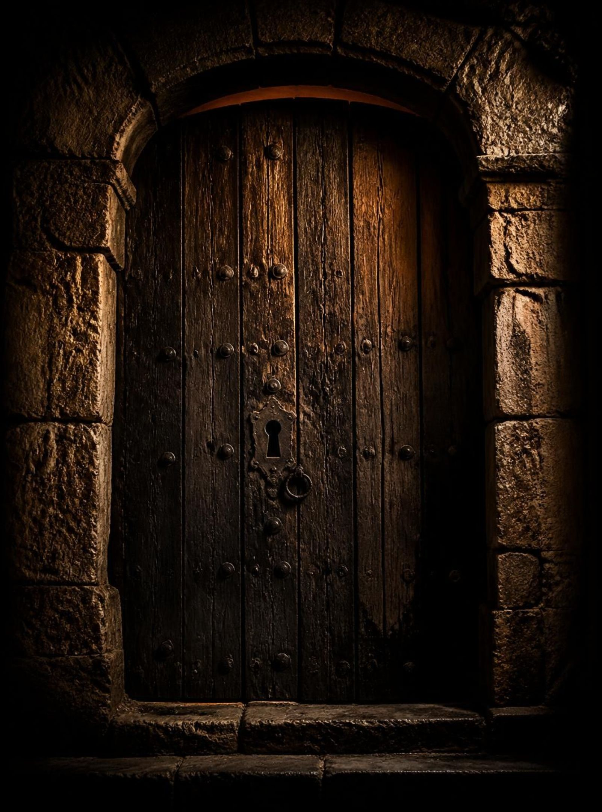
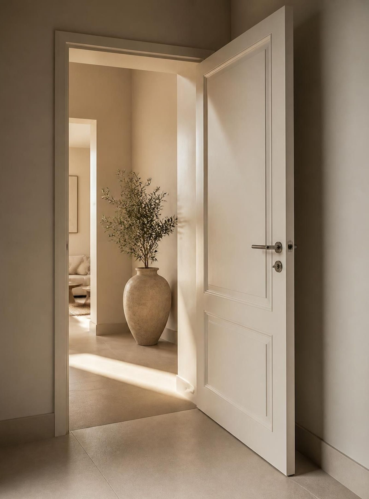
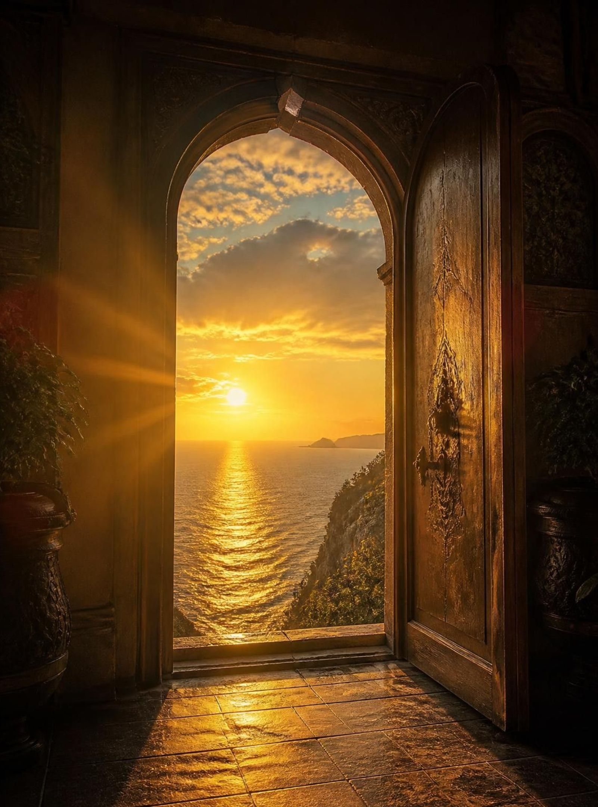

La llave que no sabías que tenías
La actitud abre puertas que el talento por sí solo no puede abrir.
Si pudieras abrir una sola puerta, ¿cuál elegirías?
Pasado · Presente · Futuro

Pasado
Madera oscura

Presente
Beige y marfil

Futuro
Luz dorada
Detrás de cada consultor hay una historia
Reconocer la vida y el crecimiento que existen detrás de los resultados.
Antes de ser consultores, somos personas con historias, retos superados y aprendizajes que no se enseñan en capacitaciones técnicas.
No hablo desde la perfección
Hablo desde lo que he vivido.
"No siempre puedo controlar lo que me pasa, pero sí puedo trabajar en cómo respondo."
Espacio para una anécdota personal real de la presentadora.

¿Qué experiencia sigues cargando que ya debería ser un aprendizaje?
Pasado: errores personales, rechazos comerciales y oportunidades que no salieron.
El pasado no se cambia, pero podemos aprender de él.

La actitud también se demuestra
Presente: acciones concretas, hábitos, relaciones, decisiones, disciplina y desempeño profesional.
La actitud no es solamente lo que pensamos. También es lo que hacemos.

¿La persona que eres hoy se parece a la que sueñas ser mañana?
Futuro: los hábitos actuales construyen la vida personal y profesional que queremos.
El futuro comienza con las decisiones que tomamos hoy.

La llave no es mágica
La actitud es algo que podemos trabajar cada día.
El pasado no podemos cambiarlo, el futuro no podemos controlarlo y el presente no podemos desperdiciarlo.
El talento puede llevarnos hasta una puerta, pero nuestra actitud puede ayudarnos a encontrar la manera de abrirla.
MI PRÓXIMA PUERTA COMIENZA CONMIGO
¿Qué actitud voy a transformar desde hoy?